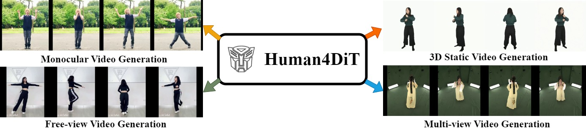

Human4DiT: Free-view Human Video Generation with 4D Diffusion Transformer

Method
The pipeline of Human4DiT. our framework is based on 4D diffusion transformer, which adopts a cascaded structure consisting of the 2D image, the view transformer, and the temporal blocks. The input contains a reference image, dynamic SMPL sequences, and camera parameters. Starting from a generated noisy latent representation, we then denoise it with multiple conditions. Firstly, the 2D image transformer block is designed to capture spatial self-attention within each frame. In addition, human identity extracted from reference image is also injected to ensure identity consistency. Secondly, we use the view transformer block to learn correspondences across different viewpoints. Finally, we adopt a temporal transformer to capture temporal correlations with time embedding.
Results -- Monocular Video
Results -- Free-view Video
Results -- Static 3D Video
Comparisons -- Monocular Video
Comparisons -- Multi-view Video
Comparisons -- Static 3D Video
Comparisons -- Free-view Video